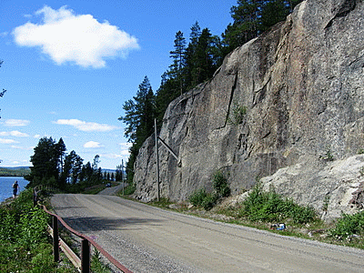

Lat: 64.00230913483061 Long: 15.968456268310546
Klippan har ett 50-tal leder i graderna 4-7, med tyngdpunkten på 5-6. Många fina bultleder. Klippan ligger extremt nära vägen. Nedanför klippan går det att bada och omgivningarna är otroligt vackra (om man gillar norrländsk skog).
Klippan är utvecklad av Slagörnbergets Klätterklubb och har ett 50-tal leder i graderna 4-7, med tungdpunkten på 5-6. Många fina bultleder. Klippan ligger extremt nära vägen - se bild. Nedanför klippan går det att bada och omgivningarna är otroligt vackra (om man gillar norrländsk skog).
<div style="float:right; margin: 3px; border: solid 1px #a0a0a0;"> <googlemap lat="64.00230913483061" lon="15.968456268310546" width=350 height=250 zoom="10" type="map"> 64.00230913483061,15.968456268310546,Hällvattnet </googlemap> </div>
Kategori:Jämtland